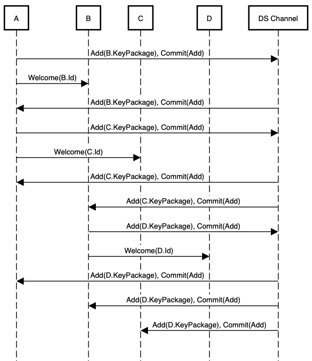

ETH-MLS-ONCHAIN
| Field | Value |
|---|---|
| Name | Secure channel setup using decentralized MLS and Ethereum accounts |
| Slug | 101 |
| Status | raw |
| Category | Standards Track |
| Editor | Ramses Fernandez ramses@status.im |
| Contributors | Aaryamann Challani aaryamann@status.im, Ekaterina Broslavskaya ekaterina@status.im, Ugur Sen ugur@status.im, Ksr ksr@status.im |
Timeline
- 2026-01-19 —
f24e567— Chore/updates mdbook (#262) - 2026-01-16 —
f01d5b9— chore: fix links (#260) - 2026-01-16 —
89f2ea8— Chore/mdbook updates (#258) - 2025-12-22 —
0f1855e— Chore/fix headers (#239) - 2025-12-22 —
b1a5783— Chore/mdbook updates (#237) - 2025-12-18 —
d03e699— ci: add mdBook configuration (#233) - 2025-04-04 —
517b639— Update the RFCs: Vac Raw RFC (#143) - 2024-10-03 —
c655980— Eth secpm splitted (#91) - 2024-08-29 —
13aaae3— Update eth-secpm.md (#84) - 2024-05-21 —
e234e9d— Update eth-secpm.md (#35) - 2024-03-21 —
2eaa794— Broken Links + Change Editors (#26) - 2024-02-28 —
b842725— Update eth-secpm.md - 2024-02-01 —
f2e1b4c— Rename ETH-SECPM.md to eth-secpm.md - 2024-02-01 —
22bb331— Update ETH-SECPM.md - 2024-01-27 —
5b8ce46— Create ETH-SECPM.md
Motivation
The need for secure communications has become paramount.
Traditional centralized messaging protocols are susceptible to various security threats,
including unauthorized access, data breaches, and single points of failure.
Therefore a decentralized approach to secure communication becomes increasingly relevant,
offering a robust solution to address these challenges.
This document specifies a private messaging service using the Ethereum blockchain as authentication service. Rooted in the existing model, this proposal addresses the deficiencies related to forward privacy and authentication inherent in the current framework. The specification is divided into the following sections:
- Private group messaging protocol, based on the MLS protocol.
- Specification of an Ethereum-based authentication protocol, based on SIWE.
Protocol flow
The following steps outline the flow of the protocol.
Account Registration and Key Generation
Each user starts by registering their Ethereum account.
It is used as the authentication service.
Upon registration, the user generates a KeyPackage
that contains a public key
and supporting metadata required for the MLS group.
Group Initialization and Member Management
When a new group is created, the initiating client generates a new GroupContext.
It contains a unique group ID and an initial epoch.
To add members, the initiator sends an Add request,
which includes the new member’s KeyPackage.
Existing members can update their identity in the group using the Update proposal,
which replaces the sender’s LeafNode in the group’s ratchet tree.
Members can be removed from the group via a Remove proposal,
which specifies the index of the member to be removed from the tree.
Upon processing this proposal,
the group generates a new group key to ensure that removed members
no longer have access to future communications.
Commit and Authentication
After receiving a valid list of proposals (Add, Update, Remove),
a client initiates a Commit message,
processing the pending proposals and updates the group’s state.
The Commit message includes the updated GroupContext
and a FramedContentAuthData,
which ensures that all group members are aware of the changes.
Each member verifies the FramedContentAuthData to ensure the changes are consistent
with the current epoch of the GroupContext.
Message Exchange
Once the group is established and all members have processed the latest Commit,
messages can be securely exchanged using
the session keyderived from the group's ratchet tree.
Each message is encapsulated within a FramedContent structure
and authenticated using the FramedContentAuthData,
ensuring message integrity.
Group members use the current GroupContext to validate incoming messages
and ensure they are consistent with the current group state.
Use of smart contracts
This protocol accomplishes decentralization through the use of smart contracts for managing groups. They are used to register users in a group and keep the state of the group updated. Smart contracts MUST include an ACL to keep the state of the group.
Private group messaging protocol
Background
The Messaging Layer Security (MLS) protocol aims at providing a group of users with end-to-end encryption in an authenticated and asynchronous way. The main security characteristics of the protocol are: Message confidentiality and authentication, sender authentication, membership agreement, post-remove and post-update security, and forward secrecy and post-compromise security. The MLS protocol achieves: low-complexity, group integrity, synchronization and extensibility.
This document describes how the structure and methods of the MLS protocol are extended for their application in decentralized environments. The approach described in this document makes use of smart contracts. It makes use of a smart contract to manage each group chat. Furthermore, this document describes how to use the Sign-in With Ethereum protocol as authentication method.
Structure
Each MLS session uses a single cipher suite that specifies the primitives to be used in group key computations. The cipher suite MUST use:
X488as Diffie-Hellman function.SHA256as KDF.AES256-GCMas AEAD algorithm.SHA512as hash function.XEd448for digital signatures.
Formats for public keys, signatures and public-key encryption MUST follow Section 5.1 of RFC9420.
Hash-based identifiers
Some MLS messages refer to other MLS objects by hash. These identifiers MUST be computed according to Section 5.2 of RFC9420.
Credentials
Each member of a group presents a credential that provides one or more identities for the member and associates them with the member's signing key. The identities and signing key are verified by the Authentication Service in use for a group.
Credentials MUST follow the specifications of section 5.3 of RFC9420.
Below follows the flow diagram for the generation of credentials.
Users MUST generate key pairs by themselves.

Message framing
Handshake and application messages use a common framing structure providing encryption to ensure confidentiality within the group, and signing to authenticate the sender.
The structure is:
PublicMessage: represents a message that is only signed, and not encrypted. The definition and the encoding/decoding of aPublicMessageMUST follow the specification in section 6.2 of RFC9420.PrivateMessage: represents a signed and encrypted message, with protections for both the content of the message and related metadata.
The definition, and the encoding/decoding of a PrivateMessage
MUST follow the specification in section 6.3 of
RFC9420.
Applications MUST use PrivateMessage to encrypt application messages.
Applications SHOULD use PrivateMessage to encode handshake messages.
Each encrypted MLS message carries a "generation" number which is a per-sender incrementing counter. If a group member observes a gap in the generation sequence for a sender, then they know that they have missed a message from that sender.
Nodes contents
This section makes use of sections 4 and 7 of RFC9420.
The nodes of a ratchet tree (Section 4 in RFC9420) contain several types of data:
- Leaf nodes describe individual members.
- Parent nodes describe subgroups.
Contents of each kind of node, and its structure MUST follow the indications described in sections 7.1 and 7.2 of RFC9420.
Leaf node validation
KeyPackage objects describe the client's capabilities and
provides keys that can be used to add the client to a group.
The validity of a leaf node needs to be verified at the following stages:
- When a leaf node is downloaded in a
KeyPackage, before it is used to add the client to the group. - When a leaf node is received by a group member in an Add, Update, or Commit message.
- When a client validates a ratchet tree.
A client MUST verify the validity of a leaf node following the instructions of section 7.3 in RFC9420.
Ratchet tree evolution
Whenever a member initiates an epoch change, they MAY need to refresh the key pairs of their leaf and of the nodes on their direct path. This is done to keep forward secrecy and post-compromise security. The member initiating the epoch change MUST follow this procedure. A member updates the nodes along its direct path as follows:
- Blank all the nodes on the direct path from the leaf to the root.
- Generate a fresh HPKE key pair for the leaf.
- Generate a sequence of path secrets, one for each node on the leaf's filtered direct path.
It MUST follow the procedure described in section 7.4 of RFC9420.
- Compute the sequence of HPKE key pairs
(node_priv,node_pub), one for each node on the leaf's direct path.
It MUST follow the procedure described in section 7.4 of RFC9420.
Views of the tree synchronization
After generating fresh key material and applying it to update their local tree state, the generator broadcasts this update to other members of the group. This operation MUST be done according to section 7.5 of RFC9420.
Leaf synchronization
Changes to group memberships MUST be represented by adding and removing leaves of the tree. This corresponds to increasing or decreasing the depth of the tree, resulting in the number of leaves being doubled or halved. These operations MUST be done as described in section 7.7 of RFC9420.
Tree and parent hashing
Group members can agree on the cryptographic state of the group by
generating a hash value that represents the contents of the group
ratchet tree and the member’s credentials.
The hash of the tree is the hash of its root node,
defined recursively from the leaves.
Tree hashes summarize the state of a tree at point in time.
The hash of a leaf is the hash of the LeafNodeHashInput object.
At the same time the hash of a parent node, including the root,
is the hash of a ParentNodeHashInput object.
Parent hashes capture information about
how keys in the tree were populated.
Tree and parent hashing MUST follow the directions in Sections 7.8 and 7.9 of RFC9420.
Key schedule
Group keys are derived using the Extract and Expand functions from
the KDF for the group's cipher suite,
as well as the functions defined below:
ExpandWithLabel(Secret, Label, Context, Length) = KDF.Expand(Secret, KDFLabel, Length)
DeriveSecret(Secret, Label) = ExpandWithLabel(Secret, Label, "", KDF.Nh)
KDFLabel MUST be specified as:
struct {
uint16 length;
opaque label<V>;
opaque context<V>;
} KDFLabel;
The fields of KDFLabel MUST be:
length = Length;
label = "MLS 1.0 " + Label;
context = Context;
Each member of the group MUST maintaint a GroupContext object
summarizing the state of the group.
The sturcture of such object MUST be:
struct {
ProtocolVersion version = mls10;
CipherSuite cipher_suite;
opaque group_id<V>;
uint64 epoch;
opaque tree_hash<V>;
opaque confirmed_trasncript_hash<V>;
Extension extension<V>;
} GroupContext;
The use of key scheduling MUST follow the indications in sections 8.1 - 8.7 in RFC9420.
Secret trees
For the generation of encryption keys and nonces, the key schedule
begins with the encryption_secret at the root and derives a tree of
secrets with the same structure as the group's ratchet tree.
Each leaf in the secret tree is associated with the same group member
as the corresponding leaf in the ratchet tree.
If N is a parent node in the secret tree, the secrets of the children
of N MUST be defined following section 9 of
RFC9420.
Encryption keys
MLS encrypts three different types of information:
- Metadata (sender information).
- Handshake messages (Proposal and Commit).
- Application messages.
For handshake and application messages, a sequence of keys is derived via a sender ratchet. Each sender has their own sender ratchet, and each step along the ratchet is called a generation. These procedures MUST follow section 9.1 of RFC9420.
Deletion schedule
All security-sensitive values MUST be deleted as soon as they are consumed.
A sensitive value S is consumed if:
- S was used to encrypt or (successfully) decrypt a message.
- A key, nonce, or secret derived from S has been consumed.
The deletion procedure MUST follow the instruction described in section 9.2 of RFC9420.
Key packages
KeyPackage objects are used to ease the addition of clients to a group asynchronously.
A KeyPackage object specifies:
- Protocol version and cipher suite supported by the client.
- Public keys that can be used to encrypt Welcome messages. Welcome messages provide new members with the information to initialize their state for the epoch in which they were added or in which they want to add themselves to the group
- The content of the leaf node that should be added to the tree to represent this client.
KeyPackages are intended to be used only once and SHOULD NOT be reused.
Clients MAY generate and publish multiple KeyPackages to support multiple cipher suites.
The structure of the object MUST be:
struct {
ProtocolVersion version;
CipherSuite cipher_suite;
HPKEPublicKey init_key;
LeafNode leaf_node;
Extension extensions<V>;
/* SignWithLabel(., "KeyPackageTBS", KeyPackageTBS) */
opaque signature<V>;
}
struct {
ProtocolVersion version;
CipheSuite cipher_suite;
HPKEPublicKey init_key;
LeafNode leaf_node;
Extension extensions<V>;
}
KeyPackage object MUST be verified when:
- A
KeyPackageis downloaded by a group member, before it is used to add the client to the group. - When a
KeyPackageis received by a group member in anAddmessage.
Verification MUST be done as follows:
- Verify that the cipher suite and protocol version of the
KeyPackagematch those in theGroupContext. - Verify that the
leaf_nodeof theKeyPackageis valid for aKeyPackage. - Verify that the signature on the
KeyPackageis valid. - Verify that the value of
leaf_node.encryption_keyis different from the value of theinit_key field.
HPKE public keys are opaque values in a format defined by Section 4 of RFC9180.
Signature public keys are represented as opaque values in a format defined by the cipher suite's signature scheme.
Group creation
A group is always created with a single member. Other members are then added to the group using the usual Add/Commit mechanism. The creator of a group MUST set:
- the group ID.
- cipher suite.
- initial extensions for the group.
If the creator intends to add other members at the time of creation,
then it SHOULD fetch KeyPackages for those members, and select a
cipher suite and extensions according to their capabilities.
The creator MUST use the capabilities information in these
KeyPackages to verify that the chosen version and cipher suite is the
best option supported by all members.
Group IDs SHOULD be constructed so they are unique with high probability.
To initialize a group, the creator of the group MUST initialize a one member group with the following initial values:
- Ratchet tree: A tree with a single node, a leaf node containing an HPKE public key and credential for the creator.
- Group ID: A value set by the creator.
- Epoch:
0. - Tree hash: The root hash of the above ratchet tree.
- Confirmed transcript hash: The zero-length octet string.
- Epoch secret: A fresh random value of size
KDF.Nh. - Extensions: Any values of the creator's choosing.
The creator MUST also calculate the interim transcript hash:
- Derive the
confirmation_keyfor the epoch according to Section 8 of RFC9420. - Compute a
confirmation_tagover the emptyconfirmed_transcript_hashusing theconfirmation_keyas described in Section 8.1 of RFC9420. - Compute the updated
interim_transcript_hashfrom theconfirmed_transcript_hashand theconfirmation_tagas described in Section 8.2 RFC9420.
All members of a group MUST support the cipher suite and protocol
version in use. Additional requirements MAY be imposed by including a
required_capabilities extension in the GroupContext.
struct {
ExtensionType extension_types<V>;
ProposalType proposal_types<V>;
CredentialType credential_types<V>;
}
The flow diagram shows the procedure to fetch key material from other users:

Below follows the flow diagram for the creation of a group:

Group evolution
Group membership can change, and existing members can change their keys in order to achieve post-compromise security. In MLS, each such change is accomplished by a two-step process:
- A proposal to make the change is broadcast to the group in a Proposal message.
- A member of the group or a new member broadcasts a Commit message that causes one or more proposed changes to enter into effect.
The group evolves from one cryptographic state to another each time a Commit message is sent and processed. These states are called epochs and are uniquely identified among states of the group by eight-octet epoch values.
Proposals are included in a FramedContent by way of a Proposal
structure that indicates their type:
struct {
ProposalType proposal_type;
select (Proposal.proposal_type) {
case add: Add:
case update: Update;
case remove: Remove;
case psk: PreSharedKey;
case reinit: ReInit;
case external_init: ExternalInit;
case group_context_extensions: GroupContextExtensions;
}
}
On receiving a FramedContent containing a Proposal, a client MUST
verify the signature inside FramedContentAuthData and that the epoch
field of the enclosing FramedContent is equal to the epoch field of the
current GroupContext object.
If the verification is successful, then the Proposal SHOULD be cached
in such a way that it can be retrieved by hash in a later Commit
message.
Proposals are organized as follows:
Add: requests that a client with a specified KeyPackage be added to the group.Update: similar to Add, it replaces the sender's LeafNode in the tree instead of adding a new leaf to the tree.Remove: requests that the member with the leaf index removed be removed from the group.ReInit: requests to reinitialize the group with different parameters.ExternalInit: used by new members that want to join a group by using an external commit.GroupContentExtensions: it is used to update the list of extensions in the GroupContext for the group.
Proposals structure and semantics MUST follow sections 12.1.1 - 12.1.7 of RFC9420.
Any list of commited proposals MUST be validated either by a the group member who created the commit, or any group member processing such commit. The validation MUST be done according to one of the procedures described in Section 12.2 of RFC9420.
When creating or processing a Commit, a client applies a list of
proposals to the ratchet tree and GroupContext.
The client MUST apply the proposals in the list in the order described
in Section 12.3 of RFC9420.
Below follows the flow diagram for the addition of a member to a group:

The diagram below shows the procedure to remove a group member:

The flow diagram below shows an update procedure:

Commit messages
Commit messages initiate new group epochs. It informs group members to update their representation of the state of the group by applying the proposals and advancing the key schedule.
Each proposal covered by the Commit is included by a
ProposalOrRef value.
ProposalOrRef identify the proposal to be applied by value
or by reference.
Commits that refer to new Proposals from the committer
can be included by value.
Commits for previously sent proposals from anyone can be sent
by reference.
Proposals sent by reference are specified by including the hash of the
AuthenticatedContent.
Group members that have observed one or more valid proposals within an epoch MUST send a Commit message before sending application data. A sender and a receiver of a Commit MUST verify that the committed list of proposals is valid. The sender of a Commit SHOULD include all valid proposals received during the current epoch.
Functioning of commits MUST follow the instructions of Section 12.4 of RFC9420.
Application messages
Handshake messages provide an authenticated group key exchange
to clients.
To protect application messages sent among the members of a group, the
encryption_secret provided by the key schedule is used to derive a
sequence of nonces and keys for message encryption.
Each client MUST maintain their local copy of the key schedule for each epoch during which they are a group member. They derive new keys, nonces, and secrets as needed. This data MUST be deleted as soon as they have been used.
Group members MUST use the AEAD algorithm associated with the negotiated MLS ciphersuite to encrypt and decrypt Application messages according to the Message Framing section. The group identifier and epoch allow a device to know which group secrets should be used and from which Epoch secret to start computing other secrets and keys. Application messages SHOULD be padded to provide resistance against traffic analysis techniques. This avoids additional information to be provided to an attacker in order to guess the length of the encrypted message. Padding SHOULD be used on messages with zero-valued bytes before AEAD encryption.
Functioning of application messages MUST follow the instructions of Section 15 of RFC9420.
Implementation of the onchain component of the protocol
Assumptions
- Users have set a secure 1-1 communication channel.
- Each group is managed by a separate smart contract.
Addition of members to a group
- On-chain: Alice creates a Smart Contract with ACL.
- Off-chain: Alice sends the contract address and an invitation message to Bob over the secure channel.
- Off-chain: Bob sends a signed response confirming his Ethereum address and agreement to join.
- Off-chain: Alice verifies the signature using the public key of Bob.
- On-chain: Alice adds Bob’s address to the ACL.
- Off-chain: Alice sends a welcome message to Bob.
- Off-chain: Alice sends a broadcast message to all group members, notifying them the addition of Bob.

Updates in groups
Removal requests and update requests are considered the same operation. One assumes Alice is the creator of the contract. They MUST be processed as follows:
- Off-chain: Bob creates a new update request.
- Off-chain: Bob sends the update request to Alice.
- Off-chain: Alice verifies the request.
- On-chain: If the verification is successfull, Alice sends it to the smart contract for registration.
- Off-chain: Alice sends a broadcast message communicating the update to all users.

Ethereum-based authentication protocol
Introduction
Sign-in with Ethereum describes how Ethereum accounts authenticate with off-chain services by signing a standard message format parameterized by scope, session details, and security mechanisms. Sign-in with Ethereum (SIWE), which is described in the EIP 4361, MUST be the authentication method required.
Pattern
Message format (ABNF)
A SIWE Message MUST conform with the following Augmented Backus–Naur Form (RFC 5234) expression.
sign-in-with-ethereum =
[ scheme "://" ] domain %s" wants you to sign in with your
Ethereum account:" LF address LF
LF
[ statement LF ]
LF
%s"URI: " uri LF
%s"Version: " version LF
%s"Chain ID: " chain-id LF
%s"Nonce: " nonce LF
%s"Issued At: " issued-at
[ LF %s"Expiration Time: " expiration-time ]
[ LF %s"Not Before: " not-before ]
[ LF %s"Request ID: " request-id ]
[ LF %s"Resources:"
resources ]
scheme = ALPHA *( ALPHA / DIGIT / "+" / "-" / "." )
; See RFC 3986 for the fully contextualized
; definition of "scheme".
domain = authority
; From RFC 3986:
; authority = [ userinfo "@" ] host [ ":" port ]
; See RFC 3986 for the fully contextualized
; definition of "authority".
address = "0x" 40*40HEXDIG
; Must also conform to captilization
; checksum encoding specified in EIP-55
; where applicable (EOAs).
statement = *( reserved / unreserved / " " )
; See RFC 3986 for the definition
; of "reserved" and "unreserved".
; The purpose is to exclude LF (line break).
uri = URI
; See RFC 3986 for the definition of "URI".
version = "1"
chain-id = 1*DIGIT
; See EIP-155 for valid CHAIN_IDs.
nonce = 8*( ALPHA / DIGIT )
; See RFC 5234 for the definition
; of "ALPHA" and "DIGIT".
issued-at = date-time
expiration-time = date-time
not-before = date-time
; See RFC 3339 (ISO 8601) for the
; definition of "date-time".
request-id = *pchar
; See RFC 3986 for the definition of "pchar".
resources = *( LF resource )
resource = "- " URI
This specification defines the following SIWE Message fields that can be parsed from a SIWE Message by following the rules in ABNF Message Format. This section follows the section ABNF message format in EIP 4361.
-
schemeOPTIONAL. The URI scheme of the origin of the request. Its value MUST be a RFC 3986 URI scheme. -
domainREQUIRED. The domain that is requesting the signing. Its value MUST be a RFC 3986 authority. The authority includes an OPTIONAL port. If the port is not specified, the default port for the provided scheme is assumed.
If scheme is not specified, HTTPS is assumed by default.
-
addressREQUIRED. The Ethereum address performing the signing. Its value SHOULD be conformant to mixed-case checksum address encoding specified in ERC-55 where applicable. -
statementOPTIONAL. A human-readable ASCII assertion that the user will sign which MUST NOT include '\n' (the byte 0x0a). -
uriREQUIRED. An RFC 3986 URI referring to the resource that is the subject of the signing. -
versionREQUIRED. The current version of the SIWE Message, which MUST be 1 for this specification. -
chain-idREQUIRED. The EIP-155 Chain ID to which the session is bound, and the network where Contract Accounts MUST be resolved. -
nonceREQUIRED. A random string (minimum 8 alphanumeric characters) chosen by the relying party and used to prevent replay attacks. -
issued-atREQUIRED. The time when the message was generated, typically the current time.
Its value MUST be an ISO 8601 datetime string.
expiration-timeOPTIONAL. The time when the signed authentication message is no longer valid.
Its value MUST be an ISO 8601 datetime string.
not-beforeOPTIONAL. The time when the signed authentication message will become valid.
Its value MUST be an ISO 8601 datetime string.
-
request-idOPTIONAL. An system-specific identifier that MAY be used to uniquely refer to the sign-in request. -
resourcesOPTIONAL. A list of information or references to information the user wishes to have resolved as part of authentication by the relying party.
Every resource MUST be a RFC 3986 URI separated by "\n- " where \n is the byte 0x0a.
Signing and Verifying Messages with Ethereum Accounts
-
For Externally Owned Accounts, the verification method specified in ERC-191 MUST be used.
-
For Contract Accounts,
-
The verification method specified in ERC-1271 SHOULD be used. Otherwise, the implementer MUST clearly define the verification method to attain security and interoperability for both wallets and relying parties.
-
When performing ERC-1271 signature verification, the contract performing the verification MUST be resolved from the specified
chain-id. -
Implementers SHOULD take into consideration that ERC-1271 implementations are not required to be pure functions. They can return different results for the same inputs depending on blockchain state. This can affect the security model and session validation rules.
-
Resolving Ethereum Name Service (ENS) Data
-
The relying party or wallet MAY additionally perform resolution of ENS data, as this can improve the user experience by displaying human friendly information that is related to the
address. Resolvable ENS data include:- The primary ENS name.
- The ENS avatar.
- Any other resolvable resources specified in the ENS documentation.
-
If resolution of ENS data is performed, implementers SHOULD take precautions to preserve user privacy and consent. Their
addresscould be forwarded to third party services as part of the resolution process.
Implementer steps: specifying the request origin
The domain and, if present, the scheme, in the SIWE Message MUST
correspond to the origin from where the signing request was made.
Implementer steps: verifying a signed message
The SIWE Message MUST be checked for conformance to the ABNF Message Format and its signature MUST be checked as defined in Signing and Verifying Messages with Ethereum Accounts.
Implementer steps: creating sessions
Sessions MUST be bound to the address and not to further resolved resources that can change.
Implementer steps: interpreting and resolving resources
Implementers SHOULD ensure that that URIs in the listed resources are human-friendly when expressed in plaintext form.
Wallet implementer steps: verifying the message format
The full SIWE message MUST be checked for conformance to the ABNF defined in ABNF Message Format.
Wallet implementers SHOULD warn users if the substring "wants you to sign in with your Ethereum account" appears anywhere in an
ERC-191
message signing request unless the message fully conforms to the format
defined ABNF Message Format.
Wallet implementer steps: verifying the request origin
Wallet implementers MUST prevent phishing attacks by verifying the
origin of the request against the scheme and domain fields in the
SIWE Message.
The origin SHOULD be read from a trusted data source such as the browser window or over WalletConnect ERC-1328 sessions for comparison against the signing message contents.
Wallet implementers MAY warn instead of rejecting the verification if the origin is pointing to localhost.
The following is a RECOMMENDED algorithm for Wallets to conform with the requirements on request origin verification defined by this specification.
The algorithm takes the following input variables:
- fields from the SIWE message.
originof the signing request: the origin of the page which requested the signin via the provider.allowedSchemes: a list of schemes allowed by the Wallet.defaultScheme: a scheme to assume when none was provided. Wallet implementers in the browser SHOULD use https.- developer mode indication: a setting deciding if certain risks should
be a warning instead of rejection. Can be manually configured or
derived from
originbeing localhost.
The algorithm is described as follows:
- If
schemewas not provided, then assigndefaultSchemeas scheme. - If
schemeis not contained inallowedSchemes, then theschemeis not expected and the Wallet MUST reject the request. Wallet implementers in the browser SHOULD limit the list of allowedSchemes to just 'https' unless a developer mode is activated. - If
schemedoes not match the scheme of origin, the Wallet SHOULD reject the request. Wallet implementers MAY show a warning instead of rejecting the request if a developer mode is activated. In that case the Wallet continues processing the request. - If the
hostpart of thedomainandorigindo not match, the Wallet MUST reject the request unless the Wallet is in developer mode. In developer mode the Wallet MAY show a warning instead and continues procesing the request. - If
domainandoriginhave mismatching subdomains, the Wallet SHOULD reject the request unless the Wallet is in developer mode. In developer mode the Wallet MAY show a warning instead and continues procesing the request. - Let
portbe the port component ofdomain, and if no port is contained in domain, assign port the default port specified for the scheme. - If
portis not empty, then the Wallet SHOULD show a warning if theportdoes not match the port oforigin. - If
portis empty, then the Wallet MAY show a warning iforigincontains a specific port. - Return request origin verification completed.
Wallet implementer steps: creating SIWE interfaces
Wallet implementers MUST display to the user the following fields from
the SIWE Message request by default and prior to signing, if they are
present: scheme, domain, address, statement, and resources.
Other present fields MUST also be made available to the user prior to
signing either by default or through an extended interface.
Wallet implementers displaying a plaintext SIWE Message to the user SHOULD require the user to scroll to the bottom of the text area prior to signing.
Wallet implementers MAY construct a custom SIWE user interface by parsing the ABNF terms into data elements for use in the interface. The display rules above still apply to custom interfaces.
Wallet implementer steps: supporting internationalization (i18n)
After successfully parsing the message into ABNF terms, translation MAY happen at the UX level per human language.
Consideration to secure 1-to-1 channels
There are situations where users need to set one-to-one communication channels in a secure way. One of these situations is when a user A wants to add a new user B to an existing group. In such situations communications between users MUST be done following the instructions in this specification describing the use of X3DH in combination with the double ratchet mechanism.
Considerations with respect to decentralization
The MLS protocol assumes the existence of a (central, untrusted) delivery service, whose responsabilites include:
- Acting as a directory service providing the initial keying material for clients to use.
- Routing MLS messages among clients.
The central delivery service can be avoided in protocols using the publish/gossip approach, such as gossipsub.
Concerning keys, each node can generate and disseminate their encryption key among the other nodes, so they can create a local version of the tree that allows for the generation of the group key.
Another important component is the authentication service, which is replaced with SIWE in this specification.
Privacy and Security Considerations
- For the information retrieval, the algorithm MUST include a access control mechanisms to restrict who can call the set and get functions.
- One SHOULD include event logs to track changes in public keys.
- The curve vurve448 MUST be chosen due to its higher security level: 224-bit security instead of the 128-bit security provided by X25519.
- It is important that Bob MUST NOT reuse
SPK.
Copyright
Copyright and related rights waived via CC0.
References
- Augmented BNF for Syntax Specifications
- Gossipsub
- HMAC-based Extract-and-Expand Key Derivation Function
- Hybrid Public Key Encryption
- Security Analysis and Improvements for the IETF MLS Standard for Group Messaging
- Signed Data Standard
- Sign-In with Ethereum
- Standard Signature Validation Method for Contracts
- The Messaging Layer Security Protocol
- Toy Ethereum Private Messaging Protocol
- Uniform Resource Identifier
- WalletConnect URI Format